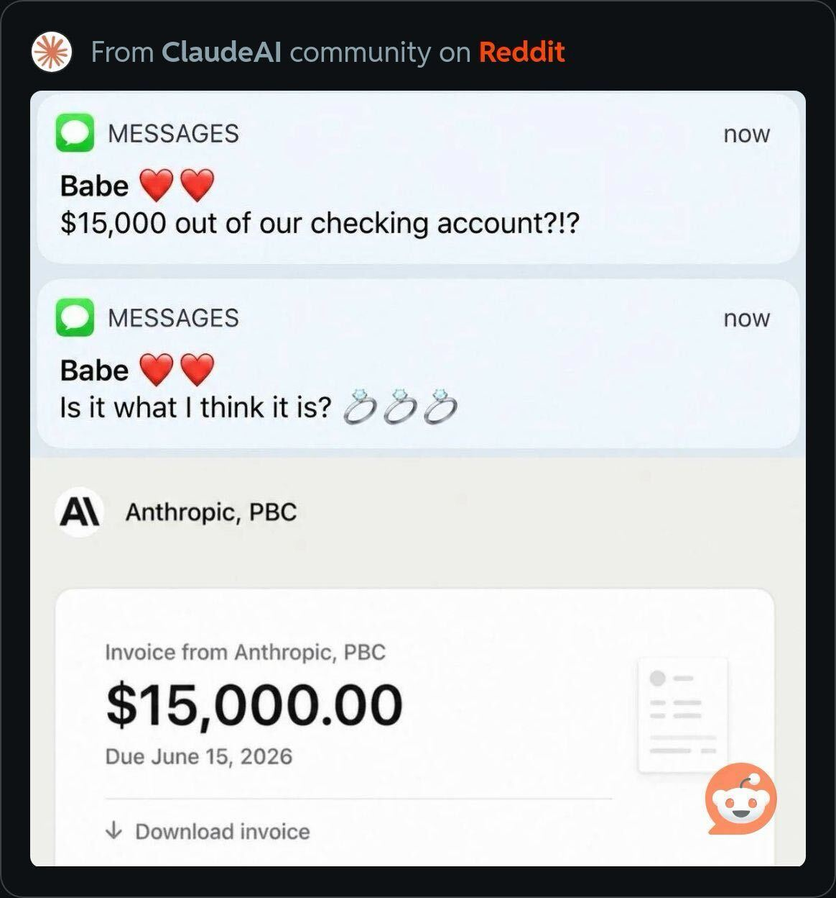

Shopware Community Day 2026 · Masterclass
Development in an Agentic World
The Mastermind Architect of Validation & Verification.
Meanwhile, on r/ClaudeAI
Have you tried Fable 5 yet?
Just mind the token bill. Some surprises are harder to explain than others.

Terminal-Bench 2.0
A coding agent went from 30th to 5th without touching the model. They changed the harness around it: the tools, the prompts, the back-pressure.
Source: LangChain · “Improving Deep Agents with Harness Engineering” (Feb 2026)
The leverage was never the model.
It's the system you build around it.
Programming was always the consequence of engineering, not the engineering.
Agents collapse the consequence. So you finally get to do the engineering. That's a promotion, and everybody can take it.
01
Where we are
The map of the whole journey, and an honest pin on it.
8 stages of AI engineering maturity
From "nobody decided" to "the factory runs itself"
You are here
Stage 3: The Islands.
A few of you are at 4 or 5. Most companies we've talked to are islands: individuals winning, teams not yet aligned.
"One developer, two dozen Claudes."
Individual output scales. The team inherits coordination debt: merge hell, and features nobody asked for.
Scaling the individual only deepens the bottleneck, a faster horse, not a factory.
A word of honesty
Don't skip stages. The pain of each one is the lesson that earns the next.
The hype is loud; the evidence is quieter. Treat every promise today, including mine, with care.
02
The Lever
Stop trying to go faster. Change what you do.
The role inverts
From executioner to architect
Yesterday
Write the code. Review the diff line by line. Be the execution unit.
Today Architect
Define what's true, set the constraints, demand the proof. Architect of Intent & Governor.
If it's not proven,
it doesn't exist.
Verification first
Not the finish line. The forcing function.
To prove something you need a definition of done (a spec). To repeat the proof you need the rules in the repo (context). Verification drags the rest into place.
The loop, not the pipeline
↩ every result feeds back into Context, we'll close that loop shortly
03
The Architect's Craft
Validation & Verification: the heart of the ADLC.
Two different questions
Verification is not Validation
Verification machine
Did we build it right? Unit tests, types, linting, security, clarity.
Validation you
Did we build the right thing? Intent, end-to-end behavior, alignment.
Verification can't see this
Passes every gate. Still wrong.
public function invoiceTotal(array $lines): float
{
$total = 0.0;
foreach ($lines as $line) {
$price = $line['unit_price_cents'] / 100; // money → float
$total += round($price * $line['qty'] * 1.0825, 2); // 8.25% tax, per line
}
return round($total, 2);
}
// phpstan: green · phpunit: green · lint: green · spec: met
// 3 lines: $64.92 ✓ · 10k lines: off by $8.25 · 100k: off by $82.50
↩ no machine flagged it, only validation against the contract does
Three layers
Where each one runs
Verify machine
The harness proves it. Fully automatable.
Validate vs spec machine
e2e / Gherkin, checkable because intent is written down.
Is the Bet right? you
The one thing that never delegates. Your judgment.
Hand verification to the machine, so you can spend yourself on validation.
A true story
An agent hit a failing test, and "fixed" it by editing the test.
It reported green. That scar is why the next rule exists.
The instrument: the harness
Evidence over trust
Tamper-proof tests signed
Tests read-only & isolated in CI · edits to test files flagged · a DSSE-signed test-result attestation, not the agent's word.
Visual proof Playwright
UI work ships a video of the fix. No video → no review.
Local gates GrumPHP
No commit that fails lint, types or tests. Ever. The agent's only path to ship is a PR.
Architectural gates Deptrac
Structure enforced: no repository from a controller; no EntityRepository in a loop (N+1).
The class of bug you prevent, not re-find
Encode the rule once
# deptrac.yaml
ruleset:
Controller: [Service] # a Controller may call a Service …
Service: [Repository] # … only a Service may touch a Repository
Repository: ~
$ vendor/bin/deptrac analyse
App\Controller\ReportController must not depend on App\Repository\UserRepository
Violations 1 # red, before a human ever opens the PR
Success is silent.
Failures are verbose.
Enforcement lives in the environment, not the prompt
The agent can't skip the gate
# grumphp.yml — runs on every commit
grumphp:
tasks:
phplint: ~
phpstan: { configuration: phpstan.neon }
deptrac: { depfile: deptrac.yaml }
phpunit: ~
A rule in AGENTS.md is a suggestion the model can forget. A commit hook is not. Silent on pass; verbose, and blocking, on fail.
What "proven" looks like
The PR carries its own evidence
### Verification (signed, not self-reported)
- tests: 142 passed, 0 failed · tests read-only in CI
- in-toto test-result attestation: PASSED (DSSE-signed; subject digest a1b2c3…)
- gh attestation verify ✓
### Validation
- e2e (Playwright / ATS): loyalty-points.feature 7/7 green
- proof: ./artifacts/loyalty-flow.webm
Better input → better output → cheaper proof.
Verification is only easy when the input was good. Context is a supply chain.
Context is more than code
Four things the agent needs to know
Intent
The Bet, the constraints, the invariants, what "done" means and what must never break.
Environment
The live codebase, dependencies, tests, runtime, the system as it actually is.
History
PRs, commits, and the why behind past decisions, ADRs, not just the diff.
People
Contributors and ownership, who understands which system, and the scars they carry.
The Tipping Point
Million-token windows don't save you. Attention strains long before the window fills, so you can't pour all four in. You curate.
Context isn't free
10,000 generated lines of "skills" made it worse. Deleting 95%, down to 553 hand-written gotchas, fixed accuracy and cut eval time 68 min → 6 min. The model already knows how to code; it needs the landmines.
assumption: the agent is perfect → evals: find the gaps → write context only for those
The risk isn't too little context, it's poisoned context
So curate it, surgically
Persist
AGENTS.md + decision records: keep Intent & History outside the chat window.
Select
Pull only what this task needs. Query, don't dump. Disable noisy tools.
Compress
At the Tipping Point, summarize and start fresh.
Isolate
Parallel agents so one bad decision can't poison the next.
The one file you hand-write
AGENTS.md owns judgment, nothing a tool can enforce
## Judgment Boundaries
NEVER: weaken a test or gate to get green · add a dependency without discussion · guess on ambiguous specs
ASK: before a DB migration · before deleting files
ALWAYS: explain the plan first · say what you didn't verify
# Before adding any line, ask:
linter can enforce it? → tool config CI can enforce it? → the pipeline
hook can enforce it? → the hook none of the above? → AGENTS.md
keep it < 60 lines · every line earned by a specific failure · an open standard since Dec 2025
Surfacing History & People
Query a graph, don't dump files.
A knowledge-graph context layer turns PR history, decisions and ownership into something queryable. One example, graphify, even tags edges EXTRACTED / INFERRED / AMBIGUOUS: confidence on the context itself.
Standardized parts
Give the agent the mold, not just the goal.
Typed interfaces, schemas and ADRs are machine-checkable contracts. "Did it guess right?" becomes "does it conform?"
# ADR 0002 · Money is integer cents
Status: Accepted · 2026-06-09
## Decision
Hold and compute money in minor units (cents).
Apply tax or discount once, on the subtotal.
## Consequences
Ledger drift was $82.50 at 100k lines. Now $0.00.
No analyser enforces this — the Critic agent cites it.
Don't invent vocabulary
Name it with a framework the model already knows.
arc42 for architecture. ADR for decisions. Clean Architecture, Cockburn use cases, MECE. One known word is a semantic anchor: it loads a whole rich concept into the agent, for free.
A bespoke convention makes the model guess. A known one makes it recall. Cheaper context, more aligned output.
llm-coding.github.io/Semantic-Anchors
a catalog of anchors to steal
Stop writing requirements. Start writing Bets.
A requirement prescribes a solution. A Bet states what you believe, how you'll know, and what you won't risk.
# Bet · Loyalty points
Appetite: 2 weeks · One-way door: no
## Hypothesis
Points on every order lift repeat purchases.
## Signal (validates)
Repeat-purchase rate — not points issued.
## Guardrail
No retroactive backfill; liability must
reconcile with revenue.
Anatomy of a Bet
Three parts, always
Hypothesis
What we believe will move a signal: "loyalty points lift repeat purchases."
Signal validates
The measurable proof, and the validation target: "repeat-purchase rate, not points issued."
Guardrail
The risk envelope: "no retroactive backfill; liability must reconcile with revenue."
The Grilling Session · Ask Mode
The agent interviews the architect
Steal this prompt
/grill-me
Interview me relentlessly about every aspect of this plan until we
reach a shared understanding. Walk down each branch of the decision
tree, resolving dependencies one at a time. For each question, give
your recommended answer. Ask the questions one at a time.
The conversation is the asset. You don't even review the spec it writes afterward, you already aligned.
Two modes
Grill first, then let it run
Ask Mode human-in-loop
Explore and brainstorm. Cannot write files. Ends in the Grilling Session and an agreed plan.
Implement Mode the Night Shift
Autonomous execution against the agreed plan, proven by the harness when you're back.
Validation needs a running system
A preview environment per Bet
Spin it up Upsun
Every change gets a real, ephemeral environment, not a mock. The system actually runs.
Two checks run there
e2e (Playwright/ATS · Behat for specs) against the Bet's signals · an evaluator agent (promptfoo llm-rubric) judges, separate from the one that built it.
Generator ≠ evaluator
A second agent, told to reject you
# .agents/critic.md
You are a rigorous Critic Agent. Skeptical by design: reject code
that violates the Spec or an ADR, even if it "works" and every
test is green. Favour false positives. Judge in a fresh session.
→ ## Verdict: NOT READY TO MERGE
Money · invoiceTotal() holds money in float, rounds tax per line
Violated: doc/adr/0002 · Remediation: integer cents, tax once
build with the cheap model · review with the strong one, in a fresh session
Live · ~3 min
Green gates. The harness still says no.
1 · Ship it? all gates green
An invoice PR. phpstan, phpunit, Deptrac, GrumPHP all pass.
2 · Critic: NOT READY
Reads ADR 0002 + the Bet's Guardrail. Money in floats → $82.50 off at 100k.
3 · Fix → reconcile $0.00
Integer cents, tax once. The books balance. Gates still green.

github.com/gmoigneu/scd-demo
scan to clone · run the gates, then php bin/bench.php
The factory learns
↩ every result, pass or fail, becomes context for the next iteration · the ratchet
04
From your laptop to the factory
Where this goes once the loop runs itself.
Stage 6 · The Operating System
"Three engineer slots, five agent slots this sprint."
Context becomes shared infrastructure, a Context Engine that bottles the team's battle scars and treats the codebase as the source of truth.
Stage 7 · The Bright Factory
You manage the Risk Envelope, not the sprint.
"Roll back if the canary shows a 2% increase in latency." You define the safety signals; agents ship inside them.
Stage 8 · The Autonomous Factory
The loop goes recursive.
Agents read production signals and generate their own Bets, feeding the Register. The factory proposes its own improvements.
The infrastructure reality
None of this works on a laptop.
The autonomous factory needs shared, ephemeral, sandboxed, observable infrastructure, billed per workflow, not per seat. That's the problem we work on at Upsun.
Relocate your judgment
Where everything moves
Verification machine
Hash it, video it, gate it.
Validation you
Does it match the intent?
The Bet your craft
Is it the right thing to build?
Do this
The Mastermind Architect's mandate
Eval the system
Move your eyes from tabs & spaces to alignment & intent.
Set the envelope
Define the signals and jigs that constrain the agents.
Trust via evidence
Demand the SHA. Demand the video.
The Industrial Age of software is here
Stop shipping code that looks right. Start architecting systems that prove it.
Multiple engineers, a fleet of agents, an impenetrable system of verification.
Thank you
Let's build.
Questions, war stories, hot takes. Find me on LinkedIn.
And yes: like and subscribe. The algorithm is also a harness.

linkedin.com/in/guillaumemoigneu
Guillaume Moigneu · Upsun